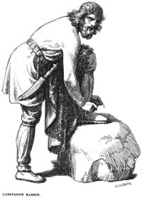

Deuses Nordicos
Voltar
- Vidar / Vingança
- Njord / Protetor dos Navegadores
- Braji / Mensageiro da poesia
Breve Resumo de Vidar
Na mitologia nórdica, Vidar ou Vídar (vindo do norueguês antigo Víðarr)
é um dos filhos de Odin, deus associado à vingança. Sua mãe é a gigante Gríðr,
uma amiga dos deuses. Ele é tão forte que ninguém, além de Thor e Magni consegue superá-lo.
Aparencia de Vidar
